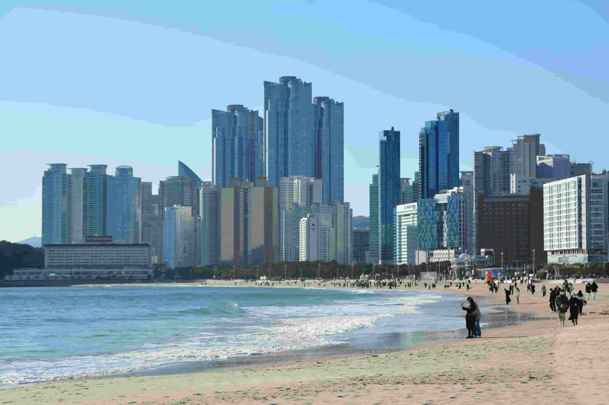

FAMOUS BEACHES
OF EAST
Discover the beauty of the eastern coast — where turquoise
waters, tropical landscapes,
modern city views and unforgettable
beach experiences come together.
VISITED
WONDERFULL
NICE BEACHES
OF EAST
DESTINATIONS
Maya Bay
Maya Bay in Thailand's Phi Phi Islands is a world-famous natural attraction known for its clear turquoise water, white sandy beach and tall limestone cliffs. Maya Bay also gained international fame because of the film The Beach.

03 — MAYA BAY
WHERE BLUE BEGINS.
A hidden tropical lagoon where emerald waters meet white sands and towering limestone cliffs in Thailand.

MAYA BAY
Krabi, Thailand

EMERALD WATERS
Phi Phi Le, Thailand

TROPICAL SHORE
Koh Phi Phi Leh

LIMESTONE WALLS
Phi Phi Le, Thailand

THE HIDDEN LAGOON
Maya Bay, Thailand

04 — HAEUNDAE
CITY MEETS SEA.
Where Busan's modern skyline meets a wide white-sand shore, creating a coastline full of energy, light and endless blue.

HAEUNDAE BEACH
Busan, South Korea

THE WHITE SHORE
Haeundae, Busan

URBAN COAST
Busan, South Korea
AFTER SUNSET
Busan, South Korea

BUSAN BY THE SEA
Haeundae, South Korea
WHY TOURISTS
VISIT
More than just beautiful beaches — these destinations offer tropical nature, scenic views, city life and unforgettable coastal experiences.
What makes Maya Bay special?
Maya Bay is famous for its natural beauty, crystal-clear turquoise water, soft white sand, tall limestone cliffs and surrounding tropical nature.
- Crystal-clear turquoise water and soft white sand.
- Tall limestone cliffs create a natural amphitheatre-like setting.
- Beautiful marine environment and surrounding tropical nature.
- Famous destination for photography and scenic sightseeing.
- Important part of the Phi Phi Islands and national-park environment.
Explore. Cruise.
Capture.
Sightseeing, photography, boat tours, island exploration and permitted marine activities.
Visitors come to experience Maya Bay's natural beauty, turquoise water, limestone cliffs and the famous Phi Phi Islands.
Maya Bay is an important natural attraction of the Phi Phi Islands and has gained worldwide recognition.
What makes Haeundae Beach special?
Haeundae Beach combines a wide sandy shoreline with modern city life. Its clear water, city skyline and convenient tourist facilities make it one of South Korea's best-known beaches.
- Wide sandy beach and beautiful coastal views.
- Modern Busan city skyline directly behind the beach.
- Tourist information, restrooms, showers, changing rooms and parking.
- Popular for seasonal events, performances and festivals.
- Located close to famous urban attractions in Busan.
Swim. Walk.
Experience.
Swimming in designated areas, sandy walks, sightseeing, photography, seasonal events and enjoying the waterfront.
Haeundae combines nature and modern city life in one location, making it popular with families, local visitors and international tourists.
Haeundae Beach is one of Busan's most famous coastal attractions and is closely connected with the city's urban life.
Beach Comparison
| FEATURE | Maya Bay | Haeundae Beach |
|---|---|---|
| Country | Thailand | South Korea |
| Location | Ko Phi Phi Leh, Krabi | Busan |
| Main Attraction | Turquoise bay & limestone cliffs | Wide beach & city skyline |
| Environment | Natural island / national-park setting | Urban coastal beach |
| Famous For | Phi Phi Islands & film location | Korea's famous beach & events |
| Ideal For | Nature lovers & photographers | Families & city travelers |